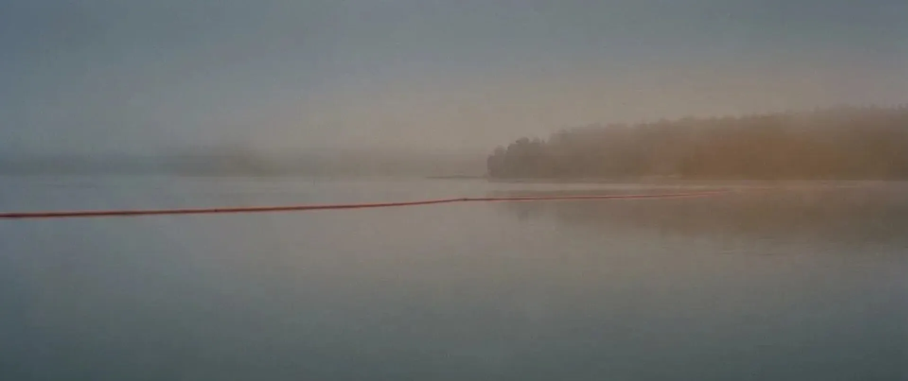

lo que hace hoy
El teclado que ya conoces. Lo que en otros vive en la nube de alguien, aquí se queda en tu teléfono. Es una beta: sirve para el día a día si no te importa avisar de algún fallo de vez en cuando.
cara a — hoy
- a1
deslizar en varios idiomas
Desliza palabras de varios idiomas en la misma frase sin tocar ninguna tecla de idioma. Hoy son el checo, el eslovaco y el inglés; el español y el alemán llegan después. FUTO Swipe lee el gesto; nuestro decodificador añade los acentos y deja que la palabra anterior elija entre los candidatos.
- a2
la siguiente palabra, calculada en el teléfono
Una pequeña red neuronal adivina tu siguiente palabra a partir de lo que ya has escrito. Funciona en el teléfono; no hay ningún servidor al que enviar nada.
- a3
dictar sin salir del teclado
Toca el micrófono al final de la barra de sugerencias y habla. El teclado graba el audio por su cuenta, desde el teléfono, unos auriculares Bluetooth, auriculares LE Audio o audífonos, y Offline Speech to Text lo convierte en texto en el propio dispositivo. Los dictados largos siguen más allá del minuto. Offline Speech to Text es una aplicación gratuita que se instala aparte. Más sobre el dictado
- a4
se siente como Gboard
Colores Material You, los mismos caracteres al mantener pulsada una tecla, la palabra escrita en el centro de la barra, una fila de números en los campos de contraseña y nada de autocorrección silenciosa.
- a5
emoji por cualquier parte de la palabra
Escribe «ohete» en la búsqueda de emoji y aparece el cohete. Mientras escribes, la barra también te sugiere el emoji que encaja.
- a6
la barra espaciadora como trackpad
Mantén pulsada la barra espaciadora y desliza para mover el cursor, o configúrala para cambiar de idioma.
- a7
HeliBoard por debajo
El historial del portapapeles, los diseños a una mano y divididos, los temas, los diseños propios y los teclados físicos vienen de HeliBoard.
cara b — en camino
- b1
El español y el alemán, cada uno con su diccionario para deslizar y sus predicciones
- b2
Un botón «corregir frase» con un modelo pequeño en el propio teléfono



nada sale de tu teléfono
Droneboard no puede llegar a internet porque Android nunca le dio permiso.
- Sin permiso
INTERNET, sin analíticas, sin informes de fallos. - No descarga nada. Los diccionarios adicionales se importan desde un archivo.
- El audio del dictado va a Offline Speech to Text en el mismo teléfono y a ningún otro sitio.
- Los contactos en las sugerencias son opcionales y vienen desactivados.
Compruébalo tú: Ajustes → Aplicaciones → Droneboard → Permisos. El acceso a la red no aparece.
qué tal desliza
| prueba | top-1 | top-3 |
|---|---|---|
| Conjunto de gestos en checo, biblioteca de gestos de Google (como en HeliBoard) | 82,4 | 96,3 |
| Conjunto de gestos en checo, Droneboard con su propio diccionario checo | 78,2 | 92,0 |
| Un teléfono real, 106 palabras propuestas en eslovaco e inglés | 82,1 | 92,5 |
instalar
Lo más fácil es Zapstore: versiones firmadas y actualizaciones desde una sola app, sin cuenta.
- Instala Zapstore desde zapstore.dev.
- Abre Droneboard en Zapstore e instálalo.
- Abre Droneboard y sigue las indicaciones para activarlo.
- Para dictar, instala también Offline Speech to Text.
¿Prefieres compilarlo? El código fuente es abierto. GPL-3.0.
novedades en nostr
Droneboard publica en nostr, una red abierta que no es de ninguna empresa. Tu navegador carga las publicaciones más recientes directamente desde los relés; esta página no tiene servidor propio y no usa cookies.
- Perfil en njump.me
- droneboard@cypherpunk.today
- Zaps: droneboard@pay.cypherpunk.today
créditos
- teclado
- Bifurcación de HeliBoard, basado en OpenBoard y AOSP LatinIME. GPL-3.0; algunos archivos Apache-2.0 o CC-BY-SA-4.0.
- deslizar
- Escritura deslizando con FUTO Swipe (swipe-library, GPL-3.0). Los pesos del modelo están bajo la FUTO Model Weights License.
- grabación con auriculares
- La grabación por Bluetooth y LE Audio viene de Third Ear, del mismo autor.
- dictado
- Offline Speech to Text, se instala aparte.
- listas de palabras
- FineWeb-2 (ODC-By), filtradas con diccionarios Hunspell.
- datos de emoji
- Anotaciones de Unicode CLDR y datos de búsqueda de emoji de Signal, a través de aosp-dictionaries.
- tipografía
- PT Sans de ParaType, SIL Open Font License.
si te gusta Droneboard, quizá también te gusten…

Third Ear
Una grabadora de voz con tus propios botones: guardar, transcribir, copiar, compartir o enviar a un grupo de White Noise. Graba también desde auriculares Bluetooth y audífonos, transcribe en el teléfono con Offline Speech to Text y funciona en Android Auto.

I Hear You
Un mando independiente y de código abierto para audífonos GN (ReSound Nexia y CROS) en Android, sin cuenta y sin conexión. Graba notas de voz con los micrófonos de los audífonos y las transcribe en el teléfono.
Las tres apps transcriben voz en el teléfono con Offline Speech to Text. Cómo funciona el dictado.